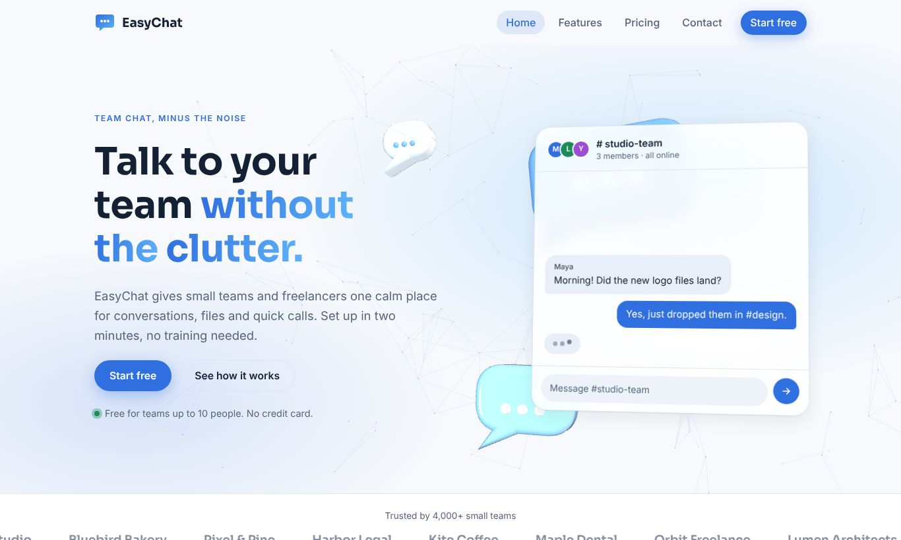
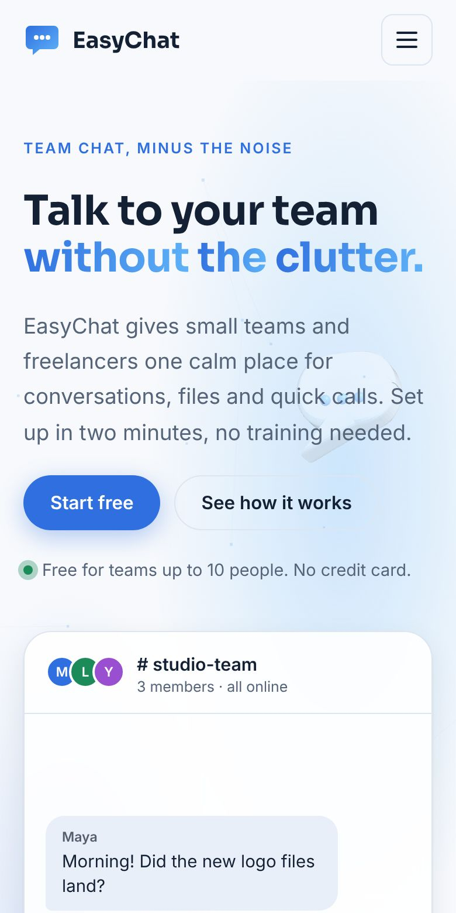
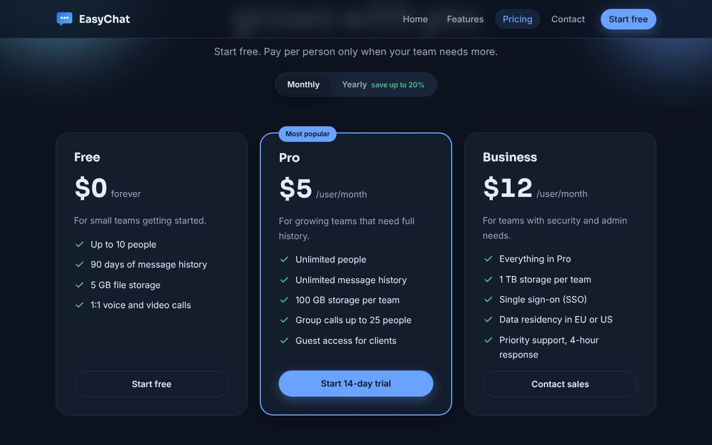

<title>AI Website Pipeline</title>
<meta name="claude:viewport-fit-sides" content="cover">
<link rel="stylesheet" href="https://fonts.googleapis.com/css2?family=Space+Grotesk:wght@500;600;700&family=Inter:wght@400;500;600&family=JetBrains+Mono:wght@400;500&display=swap">
<style>
/* Layout: one reading column; stage rail, before/after comparison, finished-site gallery, setup. */
:root {
  --bg: #f6f8fb; --surface: #ffffff; --fg: #18212f; --muted: #5a6678; --line: #dbe2ec;
  --accent: #2563c9; --accent-soft: #e4edfb; --ok: #1f8a5b; --ok-soft: #e1f3ea; --warn: #a3620a; --warn-soft: #fbefdc;
  --display: "Space Grotesk", "Segoe UI", system-ui, sans-serif;
  --body: "Inter", system-ui, -apple-system, sans-serif;
  --mono: "JetBrains Mono", ui-monospace, Menlo, Consolas, monospace;
}
@media (prefers-color-scheme: dark) { :root:not([data-theme="light"]) {
  --bg: #0f141c; --surface: #171e29; --fg: #e6ebf2; --muted: #9aa6b8; --line: #2a3444;
  --accent: #6ea3ff; --accent-soft: #1c2a42; --ok: #4cc48c; --ok-soft: #15302a; --warn: #e0a64a; --warn-soft: #33270f; color-scheme: dark } }
:root[data-theme="dark"] {
  --bg: #0f141c; --surface: #171e29; --fg: #e6ebf2; --muted: #9aa6b8; --line: #2a3444;
  --accent: #6ea3ff; --accent-soft: #1c2a42; --ok: #4cc48c; --ok-soft: #15302a; --warn: #e0a64a; --warn-soft: #33270f; color-scheme: dark }
* { box-sizing: border-box }
body { background: var(--bg); color: var(--fg); font: 15px/1.6 var(--body);
  padding-left: max(16px, env(safe-area-inset-left, 0px)); padding-right: max(16px, env(safe-area-inset-right, 0px)); padding-block: 40px 64px }
main { max-width: 980px; margin: 0 auto; display: grid; gap: 52px }
h1, h2, h3 { font-family: var(--display); text-wrap: balance; margin: 0; line-height: 1.2 }
h1 { font-size: clamp(28px, 5vw, 42px) }
h2 { font-size: 23px; margin-bottom: 6px }
h3 { font-size: 16px }
p { margin: 0; max-width: 68ch }
.sub { color: var(--muted); margin-bottom: 18px }
.eyebrow { font: 500 12px var(--mono); letter-spacing: .08em; text-transform: uppercase; color: var(--accent) }
header { display: grid; gap: 12px }
header p { color: var(--muted); font-size: 17px }
code { font-family: var(--mono); font-size: .86em; background: var(--accent-soft); color: var(--fg); padding: 1px 6px; border-radius: 4px }

/* Stage rail */
.rail { display: grid; grid-template-columns: repeat(auto-fit, minmax(165px, 1fr)); gap: 10px; list-style: none; padding: 0; margin: 0 }
.stage { min-width: 0; background: var(--surface); border: 1px solid var(--line); border-radius: 10px; padding: 14px; display: grid; gap: 5px; align-content: start }
.stage .tag { font: 500 11px var(--mono); color: var(--muted); letter-spacing: .06em; text-transform: uppercase }
.stage p { font-size: 13px; color: var(--muted) }
.stage .file { font: 11.5px var(--mono); color: var(--accent); overflow-wrap: anywhere }
.stage.ai { border-color: var(--accent); background: var(--accent-soft) }
.stage.fix { border-color: var(--warn); background: var(--warn-soft) }
.stage.fix .file { color: var(--warn) }
.stage.ship { border-color: var(--ok); background: var(--ok-soft) }
.stage.ship .file { color: var(--ok) }
.loop { margin-top: 12px; font-size: 13.5px; color: var(--muted); display: flex; gap: 8px; align-items: flex-start }
.loop svg { flex: none; margin-top: 2px; color: var(--warn) }

/* Tables */
.table-wrap { overflow-x: auto; border: 1px solid var(--line); border-radius: 10px; background: var(--surface) }
table { border-collapse: collapse; width: 100%; min-width: 600px; font-size: 14px }
th, td { text-align: left; padding: 10px 14px; border-bottom: 1px solid var(--line); vertical-align: top }
th { font: 500 11.5px var(--mono); text-transform: uppercase; letter-spacing: .06em; color: var(--muted) }
tr:last-child td { border-bottom: 0 }
td.num { font-variant-numeric: tabular-nums; white-space: nowrap }
tr.total td { font-weight: 600; background: var(--accent-soft) }
.pill { display: inline-block; font: 500 12px var(--mono); padding: 2px 8px; border-radius: 99px; background: var(--accent-soft); color: var(--accent) }
.pill.ok { background: var(--ok-soft); color: var(--ok) }
.note { font-size: 13px; color: var(--muted); margin-top: 10px }

/* Before/after bars */
.bars { display: grid; gap: 14px; margin-top: 22px; background: var(--surface); border: 1px solid var(--line); border-radius: 10px; padding: 18px }
.bar { display: grid; grid-template-columns: 150px 1fr; gap: 12px; align-items: center }
.bar span { font-size: 13.5px; color: var(--muted) }
.bar .track { height: 26px; background: var(--bg); border-radius: 6px; position: relative; overflow: hidden }
.bar .fill { height: 100%; border-radius: 6px; display: flex; align-items: center; padding-left: 10px; font: 500 12px var(--mono); color: #fff; white-space: nowrap }
.fill.manual { background: var(--muted) }
.fill.auto { background: var(--ok); min-width: 92px }
@media (max-width: 560px) { .bar { grid-template-columns: 1fr; gap: 4px } }

/* Automation features */
.feats { display: grid; grid-template-columns: repeat(auto-fit, minmax(260px, 1fr)); gap: 12px }
.feat { display: grid; gap: 4px; padding: 14px 16px; border-left: 3px solid var(--accent); background: var(--surface); border-radius: 0 8px 8px 0 }
.feat p { font-size: 13.5px; color: var(--muted) }

/* Gallery */
.gallery { display: grid; grid-template-columns: 2.2fr 1fr; gap: 14px; align-items: start }
.gallery figure { margin: 0; display: grid; gap: 6px; min-width: 0 }
.gallery img { width: 100%; border-radius: 8px; border: 1px solid var(--line); background: var(--surface) }
.gallery figcaption { font-size: 12.5px; color: var(--muted) }
.gallery .wide { grid-column: 1 / -1 }
@media (max-width: 640px) { .gallery { grid-template-columns: 1fr } }
.motion-list { columns: 2 260px; padding-left: 18px; margin: 14px 0 0; color: var(--muted); font-size: 14px }
.motion-list li { margin-bottom: 4px; break-inside: avoid }

/* Setup steps */
.steps { list-style: none; counter-reset: s; padding: 0; margin: 0; display: grid; gap: 18px }
.steps li { counter-increment: s; display: grid; grid-template-columns: 32px 1fr; gap: 14px }
.steps li::before { content: counter(s); font: 600 14px var(--display); width: 28px; height: 28px; border-radius: 50%;
  display: grid; place-items: center; border: 1.5px solid var(--accent); color: var(--accent) }
.steps li > div { min-width: 0; display: grid; gap: 6px }
.steps p { color: var(--muted) }
pre { margin: 0; background: var(--surface); border: 1px solid var(--line); border-radius: 8px; padding: 12px 14px;
  overflow-x: auto; font: 12.5px/1.55 var(--mono); color: var(--fg) }

.grid2 { display: grid; grid-template-columns: repeat(auto-fit, minmax(280px, 1fr)); gap: 28px }
.files { list-style: none; padding: 0; margin: 0; display: grid; gap: 10px }
.files li { display: grid; gap: 1px }
.files .mono { font: 13px var(--mono); color: var(--accent) }
.files span:last-child { color: var(--muted); font-size: 13.5px }
.notes { display: grid; gap: 12px; align-content: start }
.notes p { font-size: 14px; color: var(--muted) }
.notes strong { color: var(--fg) }
:focus-visible { outline: 2px solid var(--accent); outline-offset: 2px }

@media print {
  body { padding-block: 0 }
  main { gap: 30px }
  .stage, figure, tr, .feat, .bars, .steps li, h2 { break-inside: avoid }
  h2, .sub { break-after: avoid }
  .gallery { grid-template-columns: 2.2fr 1fr }
}
</style>

<main>
  <header>
    <span class="eyebrow">EasyChat · GitHub Actions + Claude API · three.js</span>
    <h1>Brief in, finished 3D website out</h1>
    <p>You describe the website in one Markdown file. The pipeline does the rest: Claude writes the pages with 3D and motion graphics, two automated checks test them, Claude fixes whatever fails, and the site goes live. Nobody has to step in between the push and the deploy.</p>
  </header>

  <section aria-labelledby="flow">
    <h2 id="flow">The automated pipeline</h2>
    <p class="sub">One push starts every step below. The orange step only runs when a check finds a problem.</p>
    <ol class="rail">
      <li class="stage"><span class="tag">You</span><h3>Write the brief</h3><p>Pages, audience, style, and the 3D and motion you want.</p><span class="file">site-brief.md</span></li>
      <li class="stage ai"><span class="tag">Claude</span><h3>Build the site</h3><p>HTML, CSS, JS and a three.js 3D scene, returned as structured files.</p><span class="file">generate_site.py</span></li>
      <li class="stage"><span class="tag">Gate 1</span><h3>Static check</h3><p>Broken links, alt text, title, language, mobile viewport.</p><span class="file">check_site.py</span></li>
      <li class="stage"><span class="tag">Gate 2</span><h3>Browser check</h3><p>Real Chromium on desktop and phone: JS errors, sideways scroll, 3D canvas, screenshots.</p><span class="file">browser_check.mjs</span></li>
      <li class="stage fix"><span class="tag">Auto-fix</span><h3>Claude repairs</h3><p>Problems go back to Claude, which returns a fixed site. Up to 2 rounds.</p><span class="file">--max-repairs 2</span></li>
      <li class="stage ship"><span class="tag">Ship</span><h3>Preview or go live</h3><p>PR: preview and comment. main: commit the site and deploy to Pages.</p><span class="file">github-pages</span></li>
    </ol>
    <p class="loop">
      <svg width="18" height="18" viewBox="0 0 24 24" fill="none" stroke="currentColor" stroke-width="2" aria-hidden="true"><path d="M3 12a9 9 0 0 1 15.5-6.2L21 8"/><path d="M21 3v5h-5"/><path d="M21 12a9 9 0 0 1-15.5 6.2L3 16"/><path d="M3 21v-5h5"/></svg>
      <span>The checks and the repair loop make up the "fully automated" part. A broken site is never deployed: if it still fails after the repair rounds, the run stops at the gate and the live site stays as it was.</span>
    </p>
  </section>

  <section aria-labelledby="compare">
    <h2 id="compare">With automation vs. without</h2>
    <p class="sub">The same four-page website with a 3D hero and motion graphics, built by hand and built by this pipeline. Hours are typical ranges for one experienced developer, not measurements from this project.</p>
    <div class="table-wrap">
      <table>
        <thead><tr><th>Task</th><th>Without automation</th><th>Hours</th><th>With this pipeline</th><th>Your time</th></tr></thead>
        <tbody>
          <tr><td>Plan and design</td><td>Wireframes and mock-ups</td><td class="num">4–8 h</td><td>Write the brief</td><td class="num">15–30 min</td></tr>
          <tr><td>Build 4 pages</td><td>Hand-code HTML, CSS, JS</td><td class="num">8–16 h</td><td>Claude writes them</td><td class="num">0</td></tr>
          <tr><td>3D hero scene</td><td>Learn and code three.js</td><td class="num">4–8 h</td><td>Generated from the brief</td><td class="num">0</td></tr>
          <tr><td>Motion graphics</td><td>Animations, counters, reveals</td><td class="num">2–4 h</td><td>Generated from the brief</td><td class="num">0</td></tr>
          <tr><td>Testing</td><td>Click through on several devices</td><td class="num">2–3 h</td><td>Static + browser checks</td><td class="num">0</td></tr>
          <tr><td>Fixing bugs</td><td>Find, fix, retest</td><td class="num">1–3 h</td><td>Claude repair loop</td><td class="num">0</td></tr>
          <tr><td>Deploy</td><td>Upload, configure hosting</td><td class="num">0.5–1 h</td><td>GitHub Pages, automatic</td><td class="num">0</td></tr>
          <tr><td>Review result</td><td>Included above</td><td class="num">—</td><td>Look at screenshots</td><td class="num">10–15 min</td></tr>
          <tr class="total"><td>Total</td><td></td><td class="num">≈ 22–43 h</td><td></td><td class="num">≈ 0.5–1 h</td></tr>
        </tbody>
      </table>
    </div>
    <div class="bars" role="img" aria-label="Bar chart: about 32 hours of hands-on work without automation versus under 1 hour with the pipeline">
      <div class="bar"><span>Without automation</span><div class="track"><div class="fill manual" style="width:100%">≈ 32 h (midpoint)</div></div></div>
      <div class="bar"><span>With this pipeline</span><div class="track"><div class="fill auto" style="width:2.3%">≈ 45 min</div></div></div>
    </div>
    <p class="note">The pipeline itself also runs for about 5–15 minutes unattended, and each run costs API credits (the run summary shows the exact token count). Every change after that is another push: edit the brief, and the whole site is rebuilt, tested and redeployed with no extra work.</p>
  </section>

  <section aria-labelledby="auto">
    <h2 id="auto">What is automated</h2>
    <p class="sub">Every item here happens without anyone clicking anything.</p>
    <div class="feats">
      <div class="feat"><h3>Self-repair loop</h3><p>Check failures are sent back to Claude in the same conversation, so it fixes the actual problem instead of starting over.</p></div>
      <div class="feat"><h3>Real-browser testing</h3><p>Chromium loads every page at 1366px and 390px, scrolls through to trigger the animations, and fails the run on any JavaScript error.</p></div>
      <div class="feat"><h3>Screenshots every run</h3><p>Desktop and phone screenshots of every page are attached to the run, so you can review without opening anything.</p></div>
      <div class="feat"><h3>PR previews</h3><p>A pull request gets a downloadable preview and an automatic comment saying it passed.</p></div>
      <div class="feat"><h3>Commit back and deploy</h3><p>On main, the regenerated site is committed to the repo and deployed to GitHub Pages.</p></div>
      <div class="feat"><h3>Run summary</h3><p>Each run lists the model, repair rounds, tokens used and time taken.</p></div>
      <div class="feat"><h3>Works without a key</h3><p>With no API key set, the pipeline still checks and deploys the committed site.</p></div>
      <div class="feat"><h3>Safe writes</h3><p>Claude can only write web files inside <code>site/</code>, and can't touch the bundled three.js library.</p></div>
    </div>
  </section>

  <section aria-labelledby="result">
    <h2 id="result">The finished site</h2>
    <p class="sub">EasyChat, built from <code>site-brief.md</code>. It passes both checks on 4 pages at 2 screen sizes. It's in the repo under <code>site/</code>.</p>
    <div class="gallery">
      <figure><figcaption>Home page, desktop. The 3D chat bubbles and particle network render live with three.js.</figcaption></figure>
      <figure><figcaption>Phone. The 3D scene moves aside and dims so the text stays readable.</figcaption></figure>
      <figure class="wide"><figcaption>Pricing page in dark mode. Prices animate when you switch between monthly and yearly billing.</figcaption></figure>
    </div>
    <ul class="motion-list">
      <li>3D glossy chat bubbles with bouncing typing dots</li>
      <li>Particle network that links up as it drifts</li>
      <li>Mouse parallax on the whole 3D scene</li>
      <li>Headline that animates in word by word</li>
      <li>Live chat demo with a typing indicator</li>
      <li>Count-up stats and a scrolling logo strip</li>
      <li>Icons that draw themselves on scroll</li>
      <li>3D tilt on cards, floating background orbs</li>
      <li>All motion off for reduced-motion visitors</li>
    </ul>
  </section>

  <section aria-labelledby="when">
    <h2 id="when">What runs when</h2>
    <div class="table-wrap">
      <table>
        <thead><tr><th>Event</th><th>Generate + repair</th><th>Checks</th><th>Result</th></tr></thead>
        <tbody>
          <tr><td>Pull request (brief, scripts or site)</td><td>Yes</td><td>Both</td><td><span class="pill">Preview + PR comment</span></td></tr>
          <tr><td>Push to <code>main</code> (brief or scripts)</td><td>Yes</td><td>Both</td><td><span class="pill ok">Committed + live on Pages</span></td></tr>
          <tr><td>Manual run (Actions tab)</td><td>Optional; pick effort and repair rounds</td><td>Both</td><td><span class="pill ok">Live on Pages</span></td></tr>
          <tr><td>No API key set</td><td>Skipped</td><td>Both</td><td><span class="pill ok">Committed site goes live</span></td></tr>
        </tbody>
      </table>
    </div>
  </section>

  <section aria-labelledby="setup">
    <h2 id="setup">One-time setup</h2>
    <ol class="steps">
      <li><div><h3>Add your Claude API key</h3><p>Repo → Settings → Secrets and variables → Actions → New repository secret named <code>ANTHROPIC_API_KEY</code>. Keys come from console.anthropic.com.</p></div></li>
      <li><div><h3>Turn on GitHub Pages</h3><p>Repo → Settings → Pages → Build and deployment → Source: <strong>GitHub Actions</strong>.</p></div></li>
      <li><div><h3>Merge to main</h3><p>The first run deploys the finished EasyChat site. After that, edit <code>site-brief.md</code> and push to rebuild.</p></div></li>
      <li><div><h3>Optional: run it on your computer</h3>
<pre>pip install -r requirements.txt
npm install && npx playwright install chromium
export ANTHROPIC_API_KEY=sk-ant-...
python scripts/generate_site.py --effort medium
npm run check                       # both quality gates
python -m http.server -d site 8000  # open http://localhost:8000</pre></div></li>
    </ol>
  </section>

  <section class="grid2" aria-label="Files and notes">
    <div>
      <h2>Files in the repo</h2>
      <ul class="files">
        <li><span class="mono">site-brief.md</span><span>The only file you need to edit.</span></li>
        <li><span class="mono">site/</span><span>The finished website, with three.js bundled under assets/vendor.</span></li>
        <li><span class="mono">scripts/generate_site.py</span><span>Claude generation plus the self-repair loop.</span></li>
        <li><span class="mono">scripts/check_site.py</span><span>Gate 1: static checks.</span></li>
        <li><span class="mono">scripts/browser_check.mjs</span><span>Gate 2: real-browser checks and screenshots.</span></li>
        <li><span class="mono">.github/workflows/ai-website.yml</span><span>Runs it all on GitHub.</span></li>
        <li><span class="mono">docs/</span><span>This guide and its PDF copy.</span></li>
      </ul>
    </div>
    <div class="notes">
      <h2>Good to know</h2>
      <p><strong>Cost.</strong> A first build is one Claude request; each repair round adds one more. Use effort <code>medium</code> to spend less.</p>
      <p><strong>Your part.</strong> Check the facts in the copy (prices, claims, contact details) before going live. The checks test whether the site works, not whether its claims are true.</p>
      <p><strong>Customising.</strong> Edit <code>SYSTEM</code> in the generator for house rules, or add rules to either check. Claude sees anything a check reports and fixes it.</p>
    </div>
  </section>
</main>
